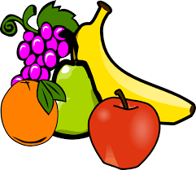

Hello,I'm Mary SinaidaA student at Moringa school studying Wed Development and Design,Am also life long learner and ready for new oppotunies.A bit about my intrest is that i
I belive when i clear my studies i will deliver a user center design and delivering the best possible experience to people. I have experience in Html,Css,Flexbox,Git,GitHub,Computer packages and Javascript.
Html 5
Css
Git
GitHub
Computer-Packages
I cleared my high school in the year 2014
Worked at DDD in the operation depertment to satisfy your team and client needs.
studied at st pauls university taking a course known as information and Technology.
I dream to build and design responsive site for projects no idea is to small since everyone deserves a voice in the web
With the knowledge i have so far have been able to complete on project am so glad since it was my first Design
My project is called snach-farmbiz just an interactive design where buyer oder and seller delivers the comodity posted.
 Click here